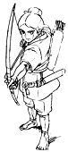
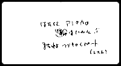

制作日誌 1996年2月
96.2.02（金）
宮崎監督の意向を受け、夜のシシ神の身体（ディダラボッチと呼ぶ）に、ＣＧで流れる星を追加するテストを開始。
来週からの撮影開始を前に、演助・伊藤氏が撮出しを開始。
96.2.07（水）
絵コンテCUT680A ～771 まで92 CUT分完成。総秒数は64分20秒。
本日よりいよいよ本編の撮影開始。

96.2.10（土）
初のラッシュチェック（25CUT）が行われる。
96.2.12（月）
朝一番で宮崎監督、奥井、片塰、保田、山本によりディダラボッチのＣＧ打合せが行われ、テスト撮影の素材作りに入る。
96.2.15（木）
高畑勲監督も参加して、話題のオールＣＧアニメ「トイ・ストーリー」の社内上映会がジブリのバーで行われる。スタッフの評判は上々。高畑監督も大満足の様子。因みに宮崎監督は「いそがしい」と不参加。
96.2.16 （金）
制作部、田中と西桐がスタジオキリーへトレスマシンの調子を見に行く。
96.2.17（土）
近藤喜文さんの手持ち終了。作監の補佐にまわってもらう。原画がますますピンチ。
96.2.20（火）
タタリ神の猪が腐る前のCUTを、普通の仕上げ処理からデジタル仕上げに変更するため、動画を描き直さなくてはならなくなった。これは、普通に使われている色鉛筆では、スキャナーに反応してしまい、影線まで拾ってしまうためである。動画チェックに説明するが、当然のごとく大激怒。動画前にアナログ・デジタルの判断を確実につけておかなければならない。
96.2.21（水）
初のデジタルペイント CUTがＣＧ部に。CUTの流れは、色指定終了後、制作のチェックを通しＣＧ部に渡すこととする。
デジタルペイント用のシリコングラフィックス製のコンピューターを、仕上げに置くか、ＣＧ部に置くかで、菅野さんと保田さんが打ち合わせ。
96.2.23（金）
（株）ムラオの村尾さん来社、トレスマシンの写りを良くするため、セルに対するマシンの圧力を強化する。
96.2.24（土）
ディダラボッチと光虫のテストラッシュを行う。ディダラボッチは身体の模様の色等を変更、光虫は有冨君のマジック版の失敗（セルの穴を埋めきれずに少し光が漏れた状態）のものを本番で使用する事に。
フランスから「宮崎監督は神だ」と宣うおたく旅行者が、秋葉原で住所を聞いたといって突然来社。社内の写真を撮りまくり帰っていった。困ったものだ。（注：ジブリでは見学は受け付けていません）
18カットの撮影入れ。近日中に二回目のラッシュを行う予定。
96.2.27（火）
今までのトレスマシンでは不可能とされていた、横掛け上部の絵を簡単に写す方法をキャリアーを改造することで実現。ジブリのマシン史上最大の発見である。
96.2.29（木）
第四回「映像の世紀」を観る会が開催される。出席者は減る一方。
| 次のページへ |
| 日誌索引へ戻る |
| 「もののけ姫」トップページへ戻る |